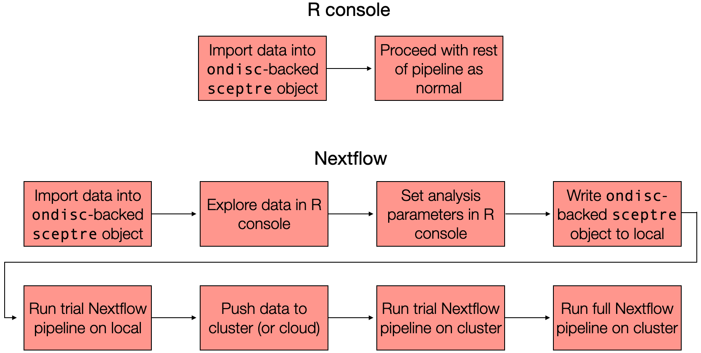
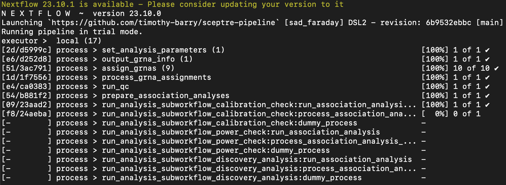

devtools::install_github("timothy-barry/ondisc")7 sceptre at scale (beta)
This chapter describes how to apply sceptre to analyze large-scale single-cell CRISPR screen data. We begin by installing ondisc, a companion R package to sceptre. ondisc provides facilities for out-of-core and distributed computing on large-scale single-cell CRISPR screen data.
Users can leverage sceptre and ondisc to analyze their data in one of two ways. First, users can analyze their data out-of-core on a laptop or desktop within the R console. This solution is most appropriate when the data are too big to fit into memory but the number of perturbation-gene pairs to be analyzed is not too large. Second, users can distribute their analysis across tens or even hundreds of processors on a computing cluster via the sceptre Nextflow pipeline. This solution is most appropriate when the data are big and a large number of pairs is to be analyzed.
The schematic below illustrates these two at-scale interfaces. The first step is the same regardless of whether one plans to analyze the data within the R console or via the Nextflow pipeline: import the data into an ondisc-backed sceptre_object, which is a kind of sceptre_object in which the response and gRNA count matrices are stored on-disk rather than in memory. If one plans to analyze the data entirely within the R console, then one proceeds in the manner as described in Chapter 1 — Section 8 of The whole game, calling the standard pipeline functions (i.e., assign_grnas(), run_qc(), etc.) on the ondisc-backed sceptre_object one-by-one. If, one the other hand, one plans to analyze the data via the Nextflow pipeline, then one proceeds through a slightly more involved sequence of steps. This chapter focuses on the Nextflow interface, although we include some discussion of the simpler R console interface at the end.

sceptre. Users can analyze their data in the R console using the standard pipeline functions or on the command line using the Nextflow pipeline. In both cases users first import their data into an ondisc-backed sceptre_object, which is a kind of sceptre_object that stores the response and gRNA expression matrices on disk (as opposed to in memory).ondisc is an R package for large-scale computing on single-cell data, with a special focus on single-cell CRISPR screen analysis. ondisc implements several novel algorithms and data structures for efficiently manipulating and querying large single-cell expression matrices. ondisc is implemented as a lightweight layer of abstraction on top of the popular HDF5 database system. Expression matrices within ondisc are stored on-disk in the custom .odm file format, which is an HDF5 file with special structure. ondisc enables fast, out-of-core access to the rows of a feature-by-cell expression matrix. (Thus, loading the expression vector of a given feature into memory is fast.) This chapter keeps discussion about ondisc to a minimum; interested readers can learn more about ondisc by reading XXX.
We use the high-MOI CRISPRi data that ship with sceptre as a running example in this chapter. We note that the example high-MOI CRISPRi data are fairly small; typically, we would leverage the at-scale interface of sceptre when the data are large (e.g., >10 gigabytes). We describe each step of the Nextflow-based pipeline in a separate section below. The title of each section indicates in parentheses whether the step is to be carried out on a local machine (“local machine”) or on a cluster (“cluster”). By “local machine,” we mean a laptop or a desktop, and by “cluster,” we mean a computing cluster or a cloud.
We begin by loading the sceptre package.
8 1. Import data into an ondisc-backed sceptre object (local machine)
The first step is to import the data into an ondisc-backed sceptre object. To this end, we call the function import_data_from_cellranger(), setting the argument use_ondisc to TRUE. Additionally, we set directory_to_write to a string indicating the directory in which to write the backing .odm files that will contain the gene and gRNA expression matrices. In the example below we set directory_to_write to "/tmp/sceptre_example". Finally, we set moi to the MOI of the dataset, grna_target_data_frame to the gRNA target data frame, and directories to the set of directories outputted by one or more calls to cellranger count. (The latter three arguments were described detail in Section 1 of The whole game.)
# set the arguments to be passed to the import function
directories <- paste0(
system.file("extdata", package = "sceptre"),
"/highmoi_example/gem_group_", 1:2
)
data(grna_target_data_frame_highmoi)
directory_to_write <- "/tmp/sceptre_example"Next, we call import_data_from_cellranger(), passing the arguments set in the above code block.
sceptre_object <- import_data_from_cellranger(
directories = directories,
moi = "high",
grna_target_data_frame = grna_target_data_frame_highmoi,
use_ondisc = TRUE,
directory_to_write = directory_to_write
)import_data_from_cellranger() (with use_ondisc set to TRUE) converts the input .mtx files into .odm files, with one .odm file generated per modality. The .odm files contain the same information as the .mtx files but stored in a more efficient format. Additionally, import_data_from_cellranger() computes the cell-specific covariates (e.g., response_n_umis, response_p_mito, batch, etc.). Importantly, import_data_from_cellranger() typically requires only a few gigabytes of memory, even when the input data are tens of gigabytes in size.
Calling list.files() on directory_to_write shows that two files have been created in directory_to_write: gene.odm, the gene expression matrix, and grna.odm, the gRNA expression matrix.
list.files(directory_to_write, full.names = TRUE)[1] "/tmp/sceptre_example/gene.odm" "/tmp/sceptre_example/grna.odm"9 2. Explore the data (local machine)
The next step — which is optional but helpful — is to explore the data within the R console. Data exploration is especially useful when the data cannot easily be loaded into memory. There are three relevant functions in this context: get_cell_covariates(), get_response_matrix(), and get_grna_matrix(). get_cell_covariates() returns the cell-specific covariates that were computed as part of the data import step.
cell_covariates <- get_cell_covariates(sceptre_object)
head(cell_covariates) response_n_umis response_n_nonzero response_p_mito grna_n_umis
1: 830 171 0.04096386 24
2: 737 160 0.05563094 8
3: 1172 199 0.03412969 6
4: 787 168 0.04574333 8
5: 653 128 0.04594181 14
6: 879 177 0.02957907 25
grna_n_nonzero batch
1: 3 batch_1
2: 1 batch_1
3: 1 batch_1
4: 1 batch_1
5: 1 batch_1
6: 1 batch_1Next, get_response_matrix() and get_grna_matrix() return the response and gRNA matrix, respectively. We call get_response_matrix() below.
response_matrix <- get_response_matrix(sceptre_object)response_matrix is an object of class odm, which is an integer-valued expression matrix backed by an .odm file. Evaluating response_matrix in the console prints the number of features and cells contained within the matrix, as well as the file path to the backing .odm file.
response_matrixAn object of class odm with the following attributes:
• 526 features
• 45919 cells
• Backing file: /tmp/sceptre_example/gene.odmodm objects support many of the key operators that standard R matrices support. For example, one can obtain the feature IDs of an odm object by calling rownames().
[1] "ENSG00000069275" "ENSG00000117222" "ENSG00000117266" "ENSG00000117280"
[5] "ENSG00000133059" "ENSG00000133065"Additionally, one can use the bracket operator (i.e, [, ]) to load a given row of the expression matrix into memory. For example, response_matrix["ENSG00000069275",] loads the expression vector corresponding to the gene “ENSG00000069275” into memory.
expression_vector <- response_matrix["ENSG00000069275",]
head(expression_vector)[1] 4 6 10 9 4 13odm objects take up very little space, as the expression data are stored on disk rather than in memory. For example, response_matrix takes up only 40 kilobytes (or 0.04 megabytes) of memory.
object.size(response_matrix) |> format(units = "Kb")[1] "38.6 Kb"Users can learn more about odm objects by reading Appendix XXX.
10 3. Set the analysis parameters (local machine)
The third step is to set the analysis parameters. We proceed more or less exactly as described in Section 2 of The whole game. In this example we seek to conduct a trans analysis of the high-MOI CRISPRi data. We construct the positive control and discovery pairs using the functions construct_positive_control_pairs() and construct_trans_pairs(), respectively.
# positive control pairs
positive_control_pairs <- construct_positive_control_pairs(
sceptre_object = sceptre_object
)
# discovery pairs
discovery_pairs <- construct_trans_pairs(
sceptre_object = sceptre_object,
positive_control_pairs = positive_control_pairs,
pairs_to_exclude = "pairs_containing_pc_targets"
)Next, we set the analysis parameters via a call to set_analysis_parameters(). Note that we set resampling_mechanism to "permutations" (as opposed to the default "crt"; see Section 2.7 of Set analysis parameters). "permutations" currently is the only option available for resampling_mechanism for ondisc-backed sceptre_objects.
sceptre_object <- set_analysis_parameters(
sceptre_object = sceptre_object,
discovery_pairs = discovery_pairs,
positive_control_pairs = positive_control_pairs,
side = "left",
resampling_mechanism = "permutations"
)This step is optional; we instead can specify the analysis parameters as arguments to the Nextflow pipeline on the command line. However, we find that it is generally easier to specify the analysis parameters within the R console via a call to set_analysis_parameters().
11 4. Write the ondisc-backed sceptre_object to disk (local machine)
The next step is to write the ondisc-backed sceptre_object to disk. To this end, we call the function write_ondisc_backed_sceptre_object(), passing sceptre_object and sceptre_object_fp as arguments; the latter is a string specifying the (fully-qualified) name of the file in which to write the sceptre_object. We set sceptre_object_fp to paste0(directory_to_write, "/sceptre_object.rds"), although sceptre_object_fp can be set to any valid file path.
sceptre_object_fp <- paste0(directory_to_write, "/sceptre_object.rds")
write_ondisc_backed_sceptre_object(
sceptre_object = sceptre_object,
sceptre_object_fp = sceptre_object_fp
)directory_to_write now contains three files: gene.odm, grna.odm, and sceptre_object.rds.
list.files(directory_to_write, full.names = TRUE)[1] "/tmp/sceptre_example/gene.odm"
[2] "/tmp/sceptre_example/grna.odm"
[3] "/tmp/sceptre_example/sceptre_object.rds"12 4. Call the trial Nextflow pipeline (local machine)
Next, we invoke the Nextflow pipeline on our local machine to analyze a small subset of the data. This small-scale analysis — which we call a “trial” analysis — helps us verify that the pipeline and data are in working order. A Nextflow launch script for the example high-MOI data is as follows.
#!/bin/bash
# Limit NF driver to 4 GB memory
export NXF_OPTS="-Xms500M -Xmx4G"
##########################
# REQUIRED INPUT ARGUMENTS
##########################
example_dir="/tmp/sceptre_example/"
# sceptre object
sceptre_object_fp=$example_dir"sceptre_object.rds"
# response ODM
response_odm_fp=$example_dir"gene.odm"
# grna ODM
grna_odm_fp=$example_dir"grna.odm"
###################
# OUTPUT DIRECTORY:
##################
output_directory=$example_dir"/pipeline_outputs"
#################
# Invoke pipeline
#################
nextflow run timothy-barry/sceptre-pipeline -r main -resume \
--sceptre_object_fp $sceptre_object_fp \
--response_odm_fp $response_odm_fp \
--grna_odm_fp $grna_odm_fp \
--output_directory $output_directory \
--grna_assignment_method "mixture" \
--pair_pod_size "30" \
--grna_pod_size "10" \
--trial "true"We will describe this launch script in detail shortly. For the time being, we note that the --trial "true" line tells Nextflow to run the trial pipeline as opposed to the full-scale pipeline. Users can copy and paste the above script into a file called launch_script.sh. Alternately, users can access launch_script.sh by git cloning the sceptre-pipeline directory and then changing directories into the examples subdirectory, as follows.
git clone git@github.com:timothy-barry/sceptre-pipeline.git
cd sceptre-pipeline/examplesOne can run the pipeline by calling bash on launch_script.sh:
bash launch_script.sh
# alternately: ./launch_script.shIf the pipeline runs correctly, the terminal output looks something like the following.

The outputs of the pipeline are stored in /tmp/sceptre_example/pipeline_outputs. Calling list.files on this directory shows that the directory contains all of the standard sceptre outputs, including the analysis summary text file (analysis_summary.txt), the plots (e.g., plot_assign_grnas.png, etc.), and the results files (e.g., results_run_discovery_analysis.rds, etc.). To explore the results in more detail, one can cd to the pipeline output directory: cd /tmp/sceptre_example/pipeline_outputs. Mac users can view the output directory in the Finder via Finder -> Go -> Go to folder -> “tmp/sceptre_example” -> enter.
list.files("/tmp/sceptre_example/pipeline_outputs") [1] "analysis_summary.txt" "plot_assign_grnas.png"
[3] "plot_covariates.png" "plot_grna_count_distributions.png"
[5] "plot_run_calibration_check.png" "plot_run_discovery_analysis.png"
[7] "plot_run_power_check.png" "plot_run_qc.png"
[9] "results_run_calibration_check.rds" "results_run_discovery_analysis.rds"
[11] "results_run_power_check.rds" An inspection of analysis_summary.txt indicates that 97 negative control pairs and 97 discovery pairs were analyzed. The trial Nextflow pipeline randomly samples 100 pairs from the discovery set, 100 pairs from the negative control set, and 100 pairs from the positive control set and subjects these pairs to analysis. (Some of the pairs may be filtered out by pairwise QC. Moreover, if any of the sets contains fewer than 100 pairs, then the entire set is analyzed.) As the trial pipeline ran without issue, we can proceed to the next step.